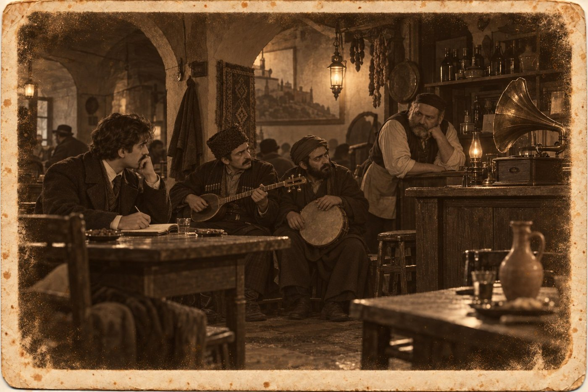

Ерунда

Происшествия
«Тифлисский листок», 26 февраля 1905 года
В ночь на 25 февраля в Ортачалах, в духане Бичико, во время ужина скоропостижно скончался известный в городе слепой певец Мисак, около 70 лет. Смерть последовала от удара.
1
Эту заметку писал я, и слово «удар» в ней поставил редактор. Я принёс ему двадцать строк. Он вычеркнул семнадцать, не дочитав.
— Старик, вино, масленая, ночь, — сказал он. — Ерунда. Три строки, и скажите спасибо, что с именем.
Я не люблю этого слова. В Казани им говорили семинаристы и аптекарские ученики, отец за него выставлял из-за прилавка. Он говорил, что в аптеке ерунды не бывает: бывает то, что прописано, и то, что отпущено по ошибке.
В Ортачалы я попал утром двадцать пятого, раньше, чем узнал, что буду об этом писать. За мной прислал князь. Сидоренко сказал, что его сиятельство просит прийти не от газеты, а так.
Про Ортачалы я знал, что там сады, духаны над Курой и что порядочные люди ездят туда после полуночи. Про ужин у Бичико знал весь город. Третью неделю из Баку шли телеграммы, одна хуже другой, и в рядах армянские лавки стали запираться на час раньше татарских. Суконщик Мелик-Назаров и ковровщик Гаджи Керим Ахундов, сорок лет торговавшие дверь в дверь, решили, что с этим надо кончать. Они сняли духан на всю ночь, посадили своих за два стола, один против другого, и позвали петь слепого Мисака, который знал песни обоих столов.
Мисака я слышал один раз, в декабре, из-за чужого забора. Он пел высоким сухим голосом, без усилия, и после каждого куплета было слышно, как молчит двор.
Князь ждал меня у ворот духана. Он был без фуражки, и я впервые увидел, что он плохо спал.
— Вы человек посторонний, — сказал он. — Это мне сегодня и нужно. Там сидят сорок человек, и каждый уже знает, кто убил. Одни знают, что татары, другие знают, что армяне. Я не хочу, чтобы они сказали это вслух раньше, чем я узнаю, как было.
Я спросил, разве его убили. Князь посмотрел на меня так, как смотрел в сентябре, когда я спросил про склянку.
— Удар был, — сказал он. — Только не тот.
2
От ворот до двери духана было двадцать шесть шагов по мокрому песку, и князь Луарсаб Атенели прошёл их на рассвете в четвёртый раз за ночь.
Зала у Бичико была одна, длинная, под сводом, с окнами на реку. Столы стояли как вечером: армянский у левой стены, татарский у правой, между ними ковёр и на ковре пустой табурет. Никто не ушёл. Сорок человек сидели над остывшим пловом и не смотрели через ковёр.
Мисак лежал в задней комнате, где музыканты отдыхают между песнями, на тахте, лицом к стене. Бичико нашёл его во втором часу, когда пошёл звать к столу, и решил сперва, что старик уснул. Городовой врач сказал «удар» ещё с порога: семьдесят лет, тучность, вино. Князь попросил его расстегнуть покойному ворот. Под воротом, ниже бороды, шла вокруг шеи тонкая ровная полоса, какую оставляет струна или шнур.
Саз висел на гвозде над тахтой. Плечевой шнур на нём был завязан свежим узлом и не на ту сторону.
Князь велел врачу писать, как тот находит нужным, а до вечера ничего никому не говорить. Потом он вышел в залу и стал слушать.
Он спрашивал у левого стола по-армянски, у правого по-татарски, у Бичико и прислуги по-грузински, и к утру знал весь вечер по часам. Старика привезли в девятом. Пел он шесть раз. Сперва армянскую застольную, потом татарские баяты, потом снова армянскую, потом две новые, от которых плакал Гаджи Керим, а Мелик-Назаров послал музыкантам сто рублей на подносе. После пятой песни столы первый раз подняли чаши через ковёр, левый с вином, правый с шербетом. В первом часу Мисак спел шестую, сказал, что устал, и поводырь увёл его в заднюю комнату.
Выходили из залы за это время одиннадцать человек, шесть от одного стола и пять от другого. Каждого видели, и про каждого сосед через ковёр готов был показать, что тот отсутствовал дольше, чем нужно человеку по своей надобности.
Врагов у старика не нашлось. Левый стол считал его своим, потому что он был армянин с Авлабара. Правый считал своим, потому что баяты он пел так, как их не поют и в Гяндже. Бичико считал своим, потому что старик сорок лет пил его вино.
Это и было хуже всего. Человека, которого любят оба стола, каждый стол убить не мог, и значит, убил другой. К вечеру это скажут вслух, к утру повторят в рядах.
Поводырь сидел на полу у двери задней комнаты, обняв колени. Это был худой малый лет двадцати с небольшим, в чохе с чужого плеча, с дудуком за поясом. По-грузински он отвечал чисто и книжно, как говорят кахетинские поповичи, и плакал, не закрывая лица. Звали его Тедо Арешидзе. Он сказал, что уложил мастера, укрыл буркой и вышел во двор играть кучерам, потому что кучера просили. Кучера это подтвердили.
Князь выслушал его и ничего не услышал. Малый не врал ни в одном слове. Так бывает в двух случаях: когда человек невиновен и когда он говорит не всё.
3
Князь посадил меня в углу, у бочки, и велел смотреть. Смотреть было не на что: сорок человек молчали на двух языках, и ни одного из двух я не знал.
Потом Гаджи Керим, сухой старик в каракулевой шапке, сказал что-то через плечо, и за правым столом запели. Пели вполголоса, человек пять, без саза. Князь наклонился ко мне и объяснил, что это баяты, которыми Мисак начинал, и что поют их в память.
Слов я не понимал, и от нечего делать стал делать то, что делаю всегда, когда не понимаю слов. Я стал считать. В каждой строке выходило семь слогов. Строк было четыре. Первая, вторая и четвёртая кончались одинаково, третья нет, и на третьей голоса чуть приподнимались, как человек приподнимается на носки перед тем, как сказать главное.
Я загибал пальцы под столом. Семь, семь, семь, семь. Следующее четверостишие было сложено так же, и третье.
Левый стол выслушал и ответил своей песней, армянской, тоже из тех, что пел вчера старик. Она была длиннее и шла вольно, строки в ней я не сосчитал.
Потом Мелик-Назаров, тучный, с седыми усами, сказал поводырю два слова. Тедо встал, вытер лицо рукавом и запел один, стоя у двери. Голос у него был небольшой и верный. Князь шепнул: это четвёртая, новая, за неё вчера подали сто рублей.
Он пел по-армянски. Я сосчитал первую строку и не поверил. Сосчитал вторую. В строке было одиннадцать слогов, в следующей десять, потом опять одиннадцать и опять десять. Рифмовались они через одну: первая с третьей, вторая с четвёртой. Ударения ложились ровно, через слог, как шаги.
Так не поют ни в Гяндже, ни на Авлабаре. Так пишут у нас. Так написана половина русских стихов за сто лет, и так, чтобы далеко не ходить, написана вся моя книжка, из которой в Казани продано одиннадцать экземпляров. Чтобы строка стояла на таких ногах, человека надо долго учить в классе, по линейке, с учителем словесности.
Тедо допел. Правый стол, не дожидаясь просьбы, начал пятую, вчерашнюю татарскую, от которой плакал Гаджи Керим. Я сосчитал и её. Одиннадцать, десять, одиннадцать, десять, рифма через строку.
Две новые песни на двух языках были скроены одной рукой по одной мерке. Старые баяты слепого старика кроила другая рука.
Я сказал это князю на ухо. Он долго молчал, потом спросил:
— Вы уверены? Вы не понимаете ни слова.
— В словах я бы запутался, — сказал я. — А пальцев у меня десять, и одного не хватило.
4
Одной рифмы для пристава мало, это я понимал сам. Мне нужен был ещё кто-нибудь, кто слышит то, чего не слышу я, а слуха у меня нет вовсе: в гимназическом хоре меня ставили в задний ряд и просили открывать рот беззвучно.
Вера Львовна с января ходила на курсы и по пятницам, до вечера, бывала во дворе у шапочников. Отец об этих пятницах знал и молчал. Я застал её на нижней галерее. Она читала Фейге вслух газету и переводила на тот немецкий, какой у неё был, а Фейга поправляла.
Я сказал, что мне нужно записать напев и что напеть его я не могу, а могу только насвистеть, и то дурно.
— Свистите, — сказала Вера Львовна и взяла у Фейги крышку от шляпной картонки.
Я просвистел то, что запомнил из четвёртой песни. Двор перестал стучать колодками. Вера Львовна поморщилась, велела повторить, потом ещё раз, медленнее, и стала ставить на картоне точки в пять линеек, которые провела ногтем. На третьем разе она начала поправлять меня голосом: здесь выше, здесь вы врёте, здесь должно вернуться. Она пропела сама, тихо, без слов, и получилось то, что пел утром Тедо.
Она посмотрела на свои точки и нахмурилась, совсем как её отец над чужим рецептом.
— Я это знаю, — сказала она. — Не это самое, а откуда оно. Нас в гимназии шесть лет водили ко всенощной, и регент полгода держал нас на одном этом распеве, пока мы не перестали сползать. Вот костяк. — Она провела пальцем по крупным точкам. — А вот это, мелкое, вокруг, навешано сверху. Так тянут на дудуке. Если мелкое снять, останется церковное пение.
— Мог это сложить слепой старик с Авлабара?
— Армянин? У них в церкви поют иначе. Это сложил человек, который сам стоял на клиросе, в нашей церкви, и долго. А потом научился играть на дудуке и постарался, чтобы не было заметно.
Фейга потянула её за рукав и спросила, о чём речь. Вера Львовна объяснила как умела. Старуха засмеялась и сказала длинную фразу, из которой я понял «лид» и «ганеф».
— Она говорит: хорошая песня всегда немножко краденая, — перевела Вера Львовна. — И ещё, что её брат шил шапки по парижской картинке и тоже никому не говорил.
Я взял крышку от картонки. Фейга сказала, что крышка стоит пять копеек и что с родни она возьмёт три.
5
Про немца князю сказал Бичико. Третьего дня к Мисаку приезжал в духан господин в котелке, с переводчиком, слушал две песни, пил чай и оставил карточку.
Господин Вайс, представитель акционерного общества «Граммофон», стоял в гостинице «Лондон», в двух комнатах во втором этаже. От подъезда до его двери было сорок одна ступень, и князь на площадке переждал, пока перестанет стучать в висках.
Во второй комнате окна были завешены одеялами. Посреди стоял на треноге аппарат с жестяной трубой, широкой, как у пожарных, а на столе под полотном лежали в ряд восковые круги. Господин Вайс, рижанин, говорил по-русски правильно и скучно. Он сказал, что смерть певца для него большая неприятность, потому что запись была назначена на вторник.
— Вы заключили условие?
— В среду. Десять номеров, пять армянских и пять татарских. Он диктовал список, молодой человек при нём читал ему бумагу вслух и водил его рукой, когда он ставил крест.
Князь попросил бумагу. Условие было написано по-русски, на бланке общества. Мещанин Мисак Овсепов обязывался напеть в аппарат десять песен. Четвёртой и пятой в списке стояли две новые. Против каждой в графе «чьё сочинение» значилось одно и то же: «собственное, исполнителя».
— Кто заполнял эту графу?
— Я, со слов. Я спросил, чьи песни. Он ответил: мои. Я спросил про две последние, потому что они непохожи на остальные, это слышит и немец. Он ответил: мои, я их пою. Молодой человек перевёл.
— Сам перевёл?
— Сам. Потом попросил воды.
Князь посмотрел на крест под условием. Крест был поставлен твёрдо, чужой рукой поверх слепой, и нажим был такой, что перо прорвало бумагу.
— Что ваш аппарат делает с песней, господин Вайс?
— Сохраняет, ваше сиятельство. Через сто лет человек в Риге или в Лондоне заведёт пружину и услышит, как пели в Тифлисе при нас с вами. Это, если угодно, бессмертие по сходной цене.
— А имя?
— Какое имя?
— Того, кто поёт.
Господин Вайс хотел ответить, но в дверь постучал коридорный с депешей, и ответил он на этот вопрос уже не князю и только через два дня.
На лестнице князь сосчитал ступени вниз. Их оказалось сорок, одну он пропустил. Он подумал, что мальчик из Казани насчитал в песне лишний слог и по нему нашёл человека, а сам он, пристав, знающий четыре языка, просидел над этими песнями ночь и слушал, на каком они языке.
6
Мисак жил на Авлабаре, в одной комнате с земляным полом, и Тедо жил при нём за занавеской. Я пришёл туда вечером, с крышкой от картонки под пальто. Князя я не предупредил. Мне хотелось сначала поговорить самому, и за это мне потом было стыдно меньше, чем я ожидал.
Старухи уже обмыли покойного и ушли. Тедо сидел на пороге и чинил язычок дудука ножом. По-русски он говорил свободно, с тем выговором, какой дают наши духовные училища от Вятки до Кутаиса.
Я сказал, что пишу о Мисаке в газету и хочу знать, откуда взялись две новые песни.
— Мастер сложил, — сказал он, не поднимая головы.
— По-армянски и по-татарски, одним размером?
— Мастер знал три языка.
Я вынул крышку и положил перед ним. Он посмотрел на точки, потом на меня.
— Это кто писал?
— Моя двоюродная сестра, на слух. Она говорит, что если снять мелкие ноты, останется всенощная.
Он долго молчал и водил ногтем по линейкам, как водила Вера Львовна.
— Тут неверно, — сказал он наконец и показал. — Тут не вниз, а на месте и потом вниз. Она хорошо слышит.
— Вы учились в семинарии?
— Четыре класса. Исключён в девятьсот первом, с волчьим билетом, за чтение и за то, что пел не то. — Он усмехнулся. — А вы что считали на пальцах утром, у бочки? Я видел.
— Слоги.
— Ерунда, — сказал Тедо. — Слоги считают в классе. В песне считают дыхание.
Он сказал это слово точно так, как его говорят в Казани, с ударением, которого не подделаешь, и я понял, что редактор мой его только слышал, а этот человек с ним вырос.
— Одиннадцать и десять, рифма через строку, — сказал я. — Я сам так пишу. У меня вышла книжка, и одиннадцать человек её купили. Четыре взяла моя тётка.
Он впервые посмотрел на меня с любопытством.
— Одиннадцать, — повторил он. — А у меня ни одного. Мои поют от Ортачал до Дидубе. Кинто свистят их на базаре. Гаджи Керим плачет, а он не плакал, когда хоронил брата. И ни одна не моя. Вы знаете, как это?
Я сказал, что не знаю. У меня было наоборот: имя моё стояло на обложке, а стихов никто не помнил, и я до этого вечера считал, что хуже не бывает.
— Три года, — сказал Тедо. — Я складывал, он пел. Я ему говорил слова в ухо, по строке, пока он не выучит. Он был большой мастер. У меня голоса нет, меня бы никто не стал слушать. Я не жаловался. Меня кормили.
Он вставил язычок, дунул и остался недоволен.
— А в среду пришёл немец со своей трубой.
Больше он ничего не сказал. Я тоже не спросил. Я знал, чем кончится, и мне хотелось, чтобы он ещё немного посидел на пороге с дудуком как человек, написавший две лучшие песни в городе.
7
Князь пришёл на Авлабар один, без Сидоренки, и ещё с улицы увидел в дверях двоих: малого с дудуком на пороге и мальчика из Казани на перевёрнутом ведре. Они молчали, как молчат люди, которые только что договорили.
Он не стал спрашивать, что мальчик здесь делает. Он сел на лавку у стены, отдышался и заговорил с Тедо по-грузински, тем языком, каким говорил бы с сыном знакомого священника.
— Ты читал ему условие вслух.
— Читал.
— И графу читал, где спрашивается, чьё сочинение.
— И графу.
— И перевёл немцу его ответ.
— Перевёл. Слово в слово. Я хорошо перевожу.
Князь подождал. Он знал, что теперь надо молчать и что малый сам дойдёт туда, куда его не довести вопросами.
— Я его просил, — сказал Тедо. — В среду ночью и в четверг. Я не просил денег. Я сказал: скажи немцу, что две песни сложил Тедо. Пусть он запишет это в своей бумаге. Пой ты, мне не жалко, у меня голоса нет. Только пусть там будет написано.
— Что он ответил?
— Он смеялся. Он сказал: песня того, кто её поёт. Ты шептал мне в ухо, а пел я. Кто видел твои слова? Они на бумаге, а бумага ерунда. — Тедо выговорил это слово по-русски посреди грузинской речи. — Он от меня его и взял. Он не знал, что оно значит, ему нравилось, как оно звенит.
— А в духане?
— В духане он спел их обе, и за четвёртую подали сто рублей. Он дал мне десять. Потом в задней комнате я укрывал его буркой, и он сказал: во вторник поедем к немцу, наденешь чистую рубаху, будешь держать мне саз. И ещё сказал: через сто лет меня будут слушать в Лондоне, а тебя, Тедо, и здесь никто не вспомнит, но ты не горюй, ты хорошо шепчешь.
Он положил дудук на порог рядом с собой.
— Я снял шнур с саза, чтобы он не мешал ему лечь. Он уже лежал. Я не помню, как это было. Потом я завязал шнур обратно и пошёл играть кучерам. Я играл им его баяты, старые, которые он сам сложил, когда я ещё не родился. Они хорошие.
Князь спросил, на какую сторону мастер завязывал шнур. Тедо ответил, что на левую, под слепую руку, и что сам он в ту ночь завязал на правую, по-своему, и понял это только утром, когда ваше сиятельство смотрели на гвоздь.
— Отчего же ты не перевязал?
— Вы уже посмотрели.
Мальчик из Казани сидел на ведре и не понимал ни слова. Князь видел по его лицу, что понимать ему и не нужно. Он знал всё это с той минуты, как сосчитал слоги, и по дороге сюда, должно быть, надеялся, что ошибся в счёте.
Князь встал.
— Столы ещё не разошлись, — сказал он по-русски. — Мелик-Назаров с ночи не был дома, и Гаджи Керим не был. Пойдём, Тедо. Сначала туда, потом в участок.
8
В Ортачалы мы приехали втроём на одном извозчике, и Тедо всю дорогу держал дудук на коленях, как держат шапку в присутствии.
Столы сидели. За день к ним прибавились сыновья и приказчики, привезли из города хлеб, и было видно, что ни один стол не встанет первым: кто уйдёт, тот как будто сознается. Бичико ходил между ними с кувшином и ни с кем не говорил.
Князь стал на ковёр, у пустого табурета. Он не повысил голоса. Сначала он сказал по-армянски, лицом к левому столу, и я услышал имя Тедо. Потом повернулся направо и сказал по-татарски, должно быть, то же самое, потому что имя стояло на том же месте. Потом по-грузински, для Бичико и прислуги. По-русски он не сказал ничего, и я понял, что это единственный язык, на котором здесь сегодня некому слушать.
Сначала было тихо. Потом Мелик-Назаров тяжело поднялся и спросил о чём-то через весь зал, глядя не на князя, а на Тедо. Князь перевёл мне позже. Он спросил: «Из-за чего?» Князь ответил: «Из-за песни». Мелик-Назаров сказал, что из-за песни не убивают, и что ему, купцу, пусть не рассказывают.
Тогда встал Гаджи Керим. Он говорил долго и спокойно, и правый стол кивал. Князь перевёл и это. Гаджи Керим сказал, что из-за сукна судятся, из-за ковров торгуются, а убивают как раз из-за песни и из-за женщины, потому что ни ту, ни другую нельзя поделить. И ещё он сказал, что хочет знать, над чьей песней он вчера плакал при людях.
Он сделал Тедо знак рукой.
Тедо вышел на ковёр. Садиться на табурет мастера он не стал и запел стоя пятую, татарскую. Я снова сосчитал слоги, уже не для дела. Одиннадцать, десять, одиннадцать, десять. Голоса у него в самом деле было немного, и на верхней ноте он сорвался, но допел.
Гаджи Керим не плакал. Он слушал, наклонив голову, как слушают отчёт приказчика, и в конце сказал одно слово. Князь мне его не перевёл, а я не спросил.
Мелик-Назаров вынул бумажник, положил на поднос сторублёвую и послал поднос не музыканту, а через ковёр, правому столу. Гаджи Керим положил сверху свою и вернул. Бичико объявил, уже по-русски, для меня, что это на похороны Мисака и на камень и что камень будет от обоих.
Столы встали разом. Я видел, что довольных нет. Каждому из сорока было бы понятнее и по-своему легче, если бы слепого задушил чужой. Они шли к коляскам вперемешку, не глядя друг на друга, и было слышно, как и в армянской речи, и в татарской мелькает одно и то же слово, вынесенное из этой истории. Слово было русское, и я его не люблю.
Тедо стоял у ворот между князем и подоспевшим Сидоренкой. Когда проезжала коляска Гаджи Керима, он снял шапку. Старик не обернулся.
9
К господину Вайсу я пошёл через два дня, в воскресенье, от газеты. Редактор согласился на десять строк о новом изобретении при условии, что общество даст объявление.
Аппарат стоял на треноге, окна были завешены. У трубы, вплотную, как у докторского рожка, стоял плотный человек с таром и ждал знака. Господин Вайс опустил руку, человек заиграл и запел, и я с первой строки узнал четвёртую песню.
Пел он хуже Мисака и лучше Тедо. Игла шла по воску, и с круга сыпалась тонкая стружка, которую помощник сдувал кисточкой.
— Вы нашли другого певца, — сказал я, когда круг сняли.
— За один день. Эти две песни знает весь город, мне называли шестерых. Я потерял исполнителя, но номера я не потеряю. Через три месяца они будут в магазине на Головинском.
— А кто их сочинил, вам известно?
— Мне сообщили из участка. Молодой человек, который переводил. Это очень печально.
— Вы напишете его имя?
Господин Вайс посмотрел на меня с тем же недоумением, с каким в пятницу, как рассказывал князь, смотрел на него.
— Где?
— На пластинке. На этикетке.
Он взял со стола готовый диск, прошлогодний, и подал мне. Диск был чёрный, тяжёлый, с одной стороны гладкий. Посредине была наклеена круглая бумажка с ангелом, который чертит пером по кругу. Под ангелом стояло по-русски и латинскими буквами: «Армянская песня. Тифлис». И номер.
— Вот всё, что мы пишем, — сказал господин Вайс. — Язык, город, номер по каталогу. Для Кавказа мы имён не ставим. Покупателю в Баку или в Эривани имя ничего не скажет, а этикетка маленькая.
— И певца не пишете?
— И певца.
— Мисак этого не знал?
— Он не спрашивал. Он спросил только, далеко ли будет слышно. Я сказал: в Лондоне.
Я держал диск и думал о том, что старик не назвал ученика в бумаге, которой не видел, ради места на бумажке, на которой ему самому места не было. А ученик задушил его за подпись, которой не получил бы никто из них двоих. Через сто лет в Лондоне заведут пружину и услышат две песни из Тифлиса, сложенные по одиннадцати и по десяти слогов, с рифмой через строку. И ни тот, кто их сложил, ни тот, кто их прославил, ни даже тот, кто их сейчас напел в трубу, не будет там назван.
— Это для вас, должно быть, ерунда, — сказал я.
— Я не знаю этого слова, — сказал господин Вайс. — Но имена не моё дело. Моё дело звук.
Я объяснил ему слово как умел. Он выслушал, подумал и сказал, что в его языке такого нет и что немцу пришлось бы говорить длиннее.
10
Вечером я рассказал про этикетку князю. Он сидел на балконе в шинели, с графином, и слушал, не перебивая.
— Значит, даром, — сказал он. — Я сорок лет думал, что знаю, за что в этом городе убивают. За землю, за сестру, за слово при людях. За место на бумажке, которого нет, я вижу в первый раз.
— Ему хватило бы графы в условии, — сказал я. — Он сам это сказал. Только пусть там будет написано.
— Ему бы не хватило. Вам хватило вашей обложки?
Я не ответил. Он подвинул ко мне тетрадь.
— Читайте пятую. Я её прочёл ещё в январе и ждал, когда придётся к слову.
Пятую строфу я разбирал дольше четвёртой: в ней было слово, которого я никак не мог прочесть, хотя знал все буквы. Князь не подсказывал. Наконец я сложил его по слогам и узнал. Оно было русское, записанное грузинскими буквами, и стояло там, как чужой человек в семейной карточке: «Автоном».
Князь перевёл, по строке.
— «Жена моя добрая женщина, и язык её не гнётся на моём имени. Писарь спросил, как писать, и я сказал, а он записал, как услышал. Автандилом звала меня мать и ещё одна, и обе теперь молчат. Пусть в их книге стоит Автоном: моё имя останется в этой тетради, а тетрадь читать некому».
Он закрыл тетрадь и положил на неё ладонь.
— Он ошибся в последней строке, — сказал князь. — Вы прочли.
Я думал о том, что дед мой до смерти прожил под именем, которое ему дал казанский писарь по слуху, и не стал поправлять, и никого за это не задушил. Он записал своё имя в тетрадь, которую некому было читать, и на том успокоился. Тедо Арешидзе было двадцать с небольшим, его песни пел весь город, и ему этого оказалось мало. Мне двадцать девятый год, меня не поёт никто, и я до сих пор помню, каким шрифтом набрана моя фамилия на обложке.
— Ваш дед был умнее нас с Тедо, — сказал я.
— Ваш дед был старше, — сказал князь. — Это не одно и то же, но издали похоже.
Он налил воды. Я спросил про выговор. Он ответил, что выговор объявлен ему в январе, по всей форме, за упущение по службе, и что бумага лежит в столе, под той, где написано одно слово в пять букв.
— О нём что-нибудь слышно?
— Ничего, — сказал князь. — Я слушаю.
11
«Тифлисский листок», 29 мая 1905 года
Магазин акционерного общества «Граммофон» на Головинском проспекте имеет честь известить о получении новых пластинок кавказской записи: песни армянские, татарские и грузинские, зурна, дудуки, тар. Пластинки проигрываются по желанию покупателя.
Это объявление общество дало, как обещало, и редактор остался доволен. Десять строк о новом изобретении он сократил до шести.
Я пошёл на Головинский в первый же день. Граммофона у меня нет и не будет, пока я плачу за пальто, но в магазине заводят любой диск, если покупатель прилично одет. Я спросил армянскую песню прошлой записи. Приказчик принёс три. На всех трёх стоял ангел с пером, язык, город и номер. Нужную я узнал со второй строки, раньше, чем сосчитал.
Из трубы пел плотный человек с таром, сквозь треск, как сквозь дождь. Одиннадцать, десять, одиннадцать, десять. Приказчик спросил, завернуть ли. Я сказал, что зайду в другой раз.
Тедо Арешидзе сидит в том же тюремном замке, где мой двоюродный брат, и суд ему назначен на осень. Я был у него в апреле и отнёс бумаги и карандашей. Он спросил, записал ли немец песни. Я сказал, что записал. Он спросил, что написано на этикетке. Я сказал как есть: «Армянская песня. Тифлис».
Он подумал и кивнул, точно ему назвали верную сумму.
— Тифлис, — сказал он. — Ну, это хоть правда.
Камень Мисаку поставили на Ходживанке к Пасхе. На нём две надписи, армянская и татарская, и я не могу прочесть ни одной. Князь говорит, что на обеих стоит имя и что обе стороны спорили только о том, чья будет сверху.
Редактор оказался прав в одном: строк в заметке вышло три. Я пересчитал.